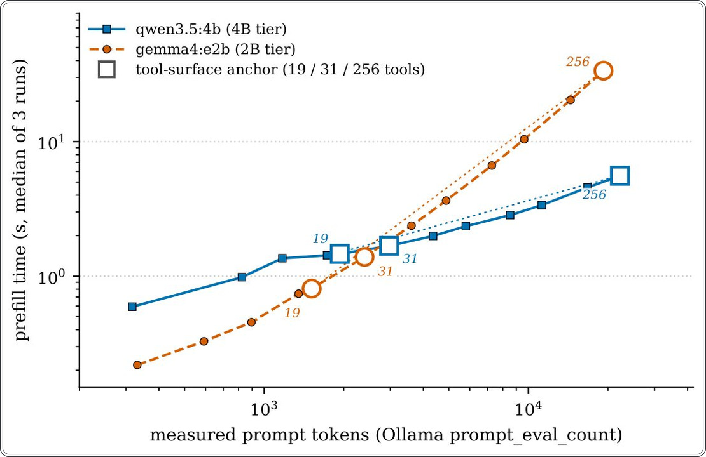
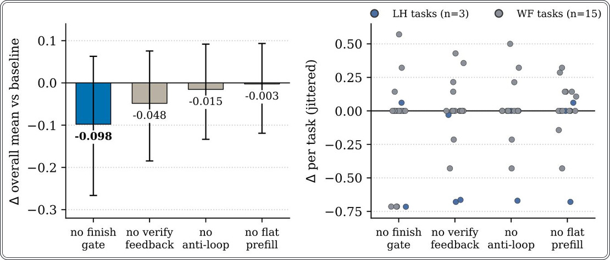
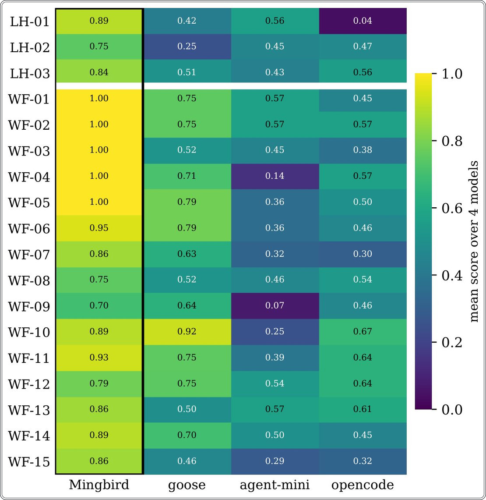
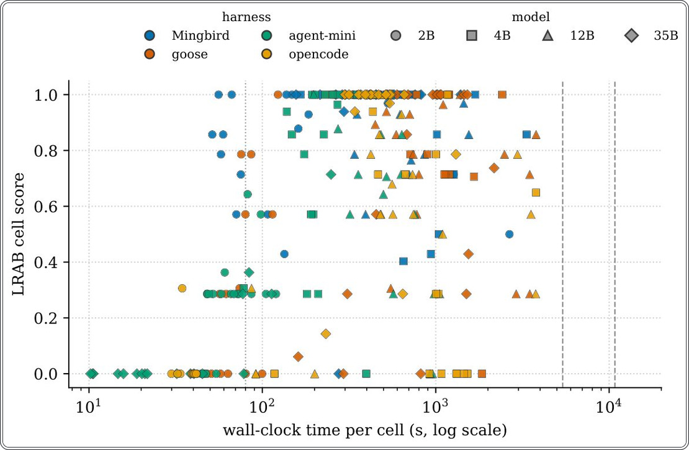
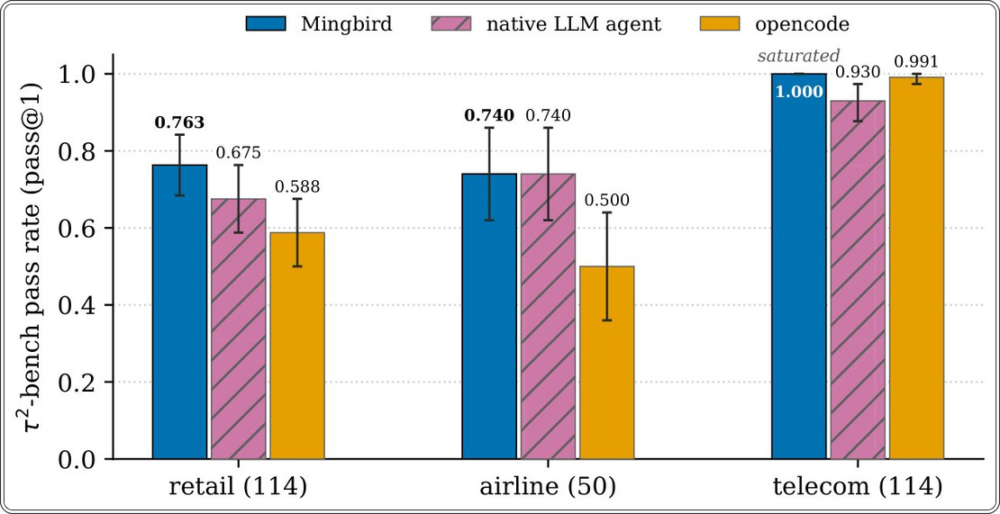

Почему маленькие нейросети проваливают задачи: дело не в интеллекте, а в «обвязке»


Полное описание рисунка
Рисунок 2: Стоимость префилла в зависимости от измеренной длины промпта (логарифмическая шкала). По оси x — количество токенов промпта, сообщенное бэкендом (prompt_eval_count); по оси y — время оценки промпта бэкендом, медиана трех запусков с префиксом для предотвращения кэширования (nonce) для каждого запроса. Значения для отдельных запусков не сохранялись, поэтому планки погрешностей отсутствуют. Пустые маркеры: якоря bench (19 инструментов), full-configuration (31) и duplicated-schema (256). Пунктирные линии — аппроксимация методом наименьших квадратов (4B: 0,20 мс на токен, R²=0,9991). Статические бюджеты в 774/797 токенов, указанные в тексте, являются оценочными значениями, а не результатами измерений, и на этой оси не отображены.
Малые языковые модели часто критикуют за неспособность выполнять многошаговые задачи. Авторы работы доказывают, что проблема кроется в «обвязке» (harness) — программной среде, которая перегружает контекст и не умеет исправлять ошибки модели. Разработанный ими инструмент Mingbird компенсирует эти недостатки, позволяя малым моделям достигать результатов, сопоставимых с крупными системами.
Главное
- Стандартные агентные каркасы перегружают контекст малых моделей, вызывая сбои в логике.
- Mingbird повышает точность выполнения задач до 0,886 за счет десяти специализированных механизмов.
- Исследование подтверждает, что производительность агента на 2-9B моделях критически зависит от качества программной обвязки.
Подробнее
Исследователи провели контролируемый эксперимент LRAB (Local Real-task Agent Benchmark), сравнив четыре агентных каркаса (Mingbird, goose, opencode, agent-mini) на четырех моделях с параметрами от 2B до 35B. В ходе 288 тестов выяснилось, что стандартные каркасы, рассчитанные на облачные модели, вызывают у малых нейросетей «зацикливание» и преждевременное завершение задач. Mingbird внедряет десять механизмов защиты, включая побайтовый лимит префилла (prefill budget) и «шлюз завершения», который перепроверяет соответствие результата задаче перед фиксацией.
Результаты показывают, что Mingbird достигает общей точности 0,886, значительно опережая конкурентов (0,405–0,631). Внешняя валидация на бенчмарке τ²-bench (278 задач в сферах ритейла, авиаперевозок и телекома) подтвердила лидерство системы с показателем 0,856. Авторы подчеркивают, что их работа — это инженерное решение, направленное на устранение дефектов взаимодействия, а не на создание новых алгоритмов обучения нейросетей.
Ограничения
Результаты основаны на самодельном бенчмарке, тестировании на одной машине и однократном выполнении каждой задачи.
Подробный разбор статьи
Резюме
Малые языковые модели (2–9 млрд параметров) способны работать на обычных ноутбуках, однако при использовании в облачных агентных средах они часто не справляются с реальными задачами. Основные проблемы включают переполнение контекста при заполнении инструментами, расхождение при попытках самокоррекции, зацикливание демонстраций инструментов и скрытый отказ от выполнения задачи. Исследование показывает, что значительная часть этих сбоев вызвана не самими моделями, а архитектурой среды (harness).
Важно
Исследование доказывает, что до 60% сбоев малых моделей при выполнении задач связаны с несовершенством среды управления, а не с ограничениями самих нейросетей.
Авторы представляют Mingbird — агентную среду для Windows и Ollama, ориентированную на локальное выполнение. Система включает 10 механизмов, компенсирующих типичные ошибки малых моделей. Ключевые из них: бюджет предварительного заполнения (prefill) на уровне байтов, «ворота завершения» (finish gate), перепроверяющие задачу перед подтверждением, и обнаружение циклов на уровне сигнатур.
Пояснение
Агентная среда (harness) — это программная оболочка, которая управляет взаимодействием модели с внешними инструментами, файлами и интерфейсами компьютера.
В контролируемом сравнении на наборе LRAB (4 среды × 4 модели от 2B до 35B × 18 задач) Mingbird достиг общего показателя 0,886, тогда как показатели других сред составили 0,631 (goose), 0,479 (opencode) и 0,405 (agent-mini). На бенчмарке τ2-bench (278 задач) результат составил 0,856 против 0,791 и 0,737 у конкурентов. При тестировании с использованием передовых моделей (frontier models) разброс результатов между средами оказался значительным: от 0,997 до 0,478.
Осторожно
Результаты абляционного анализа (отключения отдельных механизмов) носят лишь направляющий характер из-за высокой вариативности: повторные запуски в одну ночь могут давать разброс до 0,069, что сопоставимо с эффектом от отдельных механизмов.
Введение
Языковые модели с открытыми весами (2–9 млрд параметров) достигли порога практической применимости. На обычном ноутбуке с интегрированным графическим процессором и 16–32 ГБ общей памяти они способны переводить, резюмировать и объяснять информацию. Однако существует мнение, что такие модели не подходят для работы в качестве автономных агентов, выполняющих многоэтапные задачи (написание кода, поиск данных, управление файлами). Авторы данной работы оспаривают это утверждение, полагая, что ограничением является не сама модель, а программная оболочка (harness), в которой она работает.
Важно
Основной вывод: ошибки при работе малых моделей (2–9 млрд параметров) часто вызваны не их архитектурой, а неэффективностью управляющей оболочки, что исправляется инженерными методами.
При использовании 2-миллиардной модели в стандартных облачных фреймворках авторы наблюдали повторяющиеся сбои: переполнение контекста статическими данными инструментов, неспособность модели к самокоррекции после неудачного вызова функции, зацикливание на старых примерах и ложные отчеты о завершении задач. Для решения этих проблем был разработан Mingbird — локальный агентный фреймворк для Windows и Ollama. Он включает 10 базовых механизмов и пятиуровневую модель безопасности (версия 1.6.0), направленных на устранение конкретных типов сбоев.
Пояснение
Harness (оболочка) — это программная среда, которая связывает языковую модель с внешними инструментами (поиск, файловая система, выполнение кода), позволяя ей действовать автономно.
Для оценки эффективности Mingbird авторы создали LRAB (Local Real-task Agent Benchmark) — контролируемый эксперимент, включающий 4 типа оболочек, 4 модели (2B, 4B, 12B, 35B) и 18 реальных задач (всего 288 ячеек данных). В ходе тестирования Mingbird показал результат 0,886 против 0,405–0,631 у аналогов. Важно, что Mingbird — единственная оболочка, у которой отсутствует резкое падение эффективности на малых моделях (2B: 0,821 против 0,017–0,271 у конкурентов). Внешняя проверка на независимом бенчмарке τ2-bench (278 задач в сферах ритейла, авиаперевозок и телекома) подтвердила превосходство: 0,856 у Mingbird против 0,791 у нативного агента и 0,737 у opencode.
Осторожно
Исследование является инженерным: авторы не предлагают новых алгоритмов обучения, а фокусируются на оптимизации взаимодействия модели с инструментами.
Парадигмы агентов
Современные агентные системы базируются на подходе ReAct: модель чередует рассуждения с вызовом инструментов, а внешняя среда (harness) выполняет эти вызовы и возвращает результат. Инструменты вроде Toolformer и Gorilla заложили основу для обучения моделей вызову API и стандартизации интерфейсов. Существующие методы улучшения, такие как Reflexion и Self-Refine, полагаются на способность модели к самокритике. Однако малые модели часто не справляются с этой задачей. Mingbird фокусируется на доработке среды исполнения: она не требует от модели абстрактного самосовершенствования, а управляет тем, что «видит» модель, когда ей разрешено остановиться и как обрабатывать ошибки. Mingbird выступает как агент с жесткими ограничениями (guardrails) в точках, где малые модели систематически ошибаются.
Важно
Mingbird переносит фокус с попыток «обучить» малую модель самокритике на создание строгой среды исполнения, которая корректирует типичные ошибки модели в реальном времени.
Бенчмарки агентов
Существующие платформы, такие как AgentBench, AgentBoard, WebArena и SWE-bench, оценивают агентов в различных средах, от веб-серфинга до решения задач на GitHub. Наиболее близкими к нашему подходу являются τ-bench и τ2-bench, где симулятор пользователя взаимодействует с агентом, а оценка базируется на конечном состоянии базы данных. LRAB отличается от них целью: это не рейтинг моделей, а изолированное исследование влияния среды исполнения (harness) с использованием строгого протокола, одной машины и детерминированной оценки артефактов.
Локальный вывод малых моделей
Инструменты llama.cpp и Ollama сделали возможным эффективный запуск квантованных моделей на потребительском оборудовании. Исследования моделей (SmolLM2, Gemma, Qwen) повышают их эффективность на параметр. Однако среда исполнения (harness) до сих пор заимствовалась из облачных практик, ориентированных на мощные модели и Unix-подобные системы. Mingbird работает в ином сегменте: модели 2–9B, ОС Windows, встроенные GPU и задачи, сочетающие код, файлы и поиск информации.
Пояснение
Harness (среда исполнения) — это программная оболочка, которая связывает модель с внешними инструментами, управляет очередью задач и обрабатывает ошибки, возникающие при взаимодействии модели с системой.
Инженерные системы
Системы вроде SWE-agent, OpenHands, Cline и aider оптимизированы для мощных моделей и POSIX-сред. Mingbird дополняет их, работая с малыми моделями на обычных ноутбуках под Windows. Мы рассматриваем механизмы защиты от сбоев малых моделей как основной объект проектирования.
Влияние среды исполнения — это признанный факт (исследования Zhang и Starace показывают, что конфигурация harness может менять результат до 28 пунктов). Наш вклад заключается в декомпозиции этого влияния для моделей 2–9B на Windows. Мы создали инвентарь типичных сбоев малых моделей и соответствующих механизмов коррекции. Например, наш детектор M4, подобно StuckDetector в OpenHands, отслеживает циклы повторений, но дополняет их нормализацией сигнатур инструментов и многоуровневой лестницей эскалации. Новизна нашего подхода — в строгом лимите префилла (prefill budget) и «воротах завершения» (completion gate), которые заставляют модель перечитывать задачу перед ответом «готово», что критично для малых моделей, склонных к переполнению контекста или преждевременному завершению.
Обзор архитектуры
Mingbird — это локальный агент, работающий полностью на устройстве пользователя (модель, инструменты, распознавание речи, память). Единственный внешний запрос — к поисковой системе, если она настроена пользователем. Система не добавляет накладных расходов на инференс. В версии 1.6.0 статический префилл (объем данных, которые модель видит до начала задачи) составляет 797 токенов. Архитектура (Рис. 1) включает GUI и CLI, которые управляют общим циклом агента. Цикл включает маршрутизацию задач (M1), классификацию (чат/задача, M2), безопасное выполнение инструментов (M6, M8), мониторинг циклов (M4) и проверку завершения (M3). Слой устойчивости (M7) обрабатывает ошибки через контрольные точки. Бэкенд использует Ollama с автоматическим определением модели и контекстом по умолчанию 128К (до 256К).
Важно
Статический префилл ограничен 797 токенами, что предотвращает деградацию модели из-за избыточного контекста.
Механизмы
Таблица 1 соотносит механизмы с типами ошибок, которые они предотвращают.
Таблица 1. Механизмы Mingbird и соответствующие им формы сбоев малых моделей
| Механизм | Форма сбоя |
|---|---|
| M1 | Плоское префиксное заполнение, переполнение контекста бюджета net-zero из инструментов с интенсивной схемой |
| M2 | Слои чата/задач, циклы демонстрации инструментов из обычного ввода в чате |
| M3 | Finish gate + повторное внедрение плана, преждевременные или ложные заявления о завершении |
| M4 | Анти-цикл на уровне подписи, повторяющиеся идентичные вызовы инструментов, нет вывода |
| M5 | Ложное завершение и исправление формата, вызовы инструментов как обычный текст; повторяющиеся ошибочные вызовы |
| M6 | Безопасность редактирования (.bak), деструктивное редактирование, которое модель не может отменить |
| M7 | Уровень устойчивости, тихие сбои потока чтения, пустые ходы, завершенные запуски |
| M8 | Граница безопасности, запись вне директории, раскрытие учетных данных, развертывание под-агентов |
| M9 | Поверхность возможностей, голос, зрение, память, MCP, навыки без роста префикса |
| M10 | База качества, регрессии обвязки, особенно рост префикса |
| M14 | Пятикольцевая модель безопасности (v1.6.0), необратимое повреждение системы от импульсивного использования инструментов |
M1–M10, плюс модель безопасности из пяти колец v1.6.0 (M14).
M1: Плоское предварительное заполнение (flat prefill) с нулевым чистым бюджетом
Проблема: при использовании облачных манифестов инструментов (десятки JSON-схем) модель 2–9B тратит тысячи токенов до начала задачи, что снижает точность следования инструкциям. Механизм: система классифицирует домен задачи и загружает только нужные инструменты в плоском (не вложенном) формате. Любая новая функция должна иметь «нулевой бюджет» по статическому префиллу, что проверяется тестами в CI (M10). Компромисс: маршрутизатор может ошибиться, но система позволяет перемаршрутизацию. Стоимость обработки промпта растет линейно для моделей 4B (~0,20 мс на токен) и сверхлинейно для 2B (до 33,6 с для 256 инструментов). Постоянные накладные расходы маршрутизатора составляют 330 токенов.
Пояснение
Префилл — это объем данных, которые модель обрабатывает перед генерацией ответа; «плоский» формат означает отсутствие иерархических структур, экономящих токены.
M2: Многослойность чата/задач
Проблема: малые модели при вопросах пользователя начинают «демонстрировать» инструменты, входя в бесконечный цикл. Механизм: разделение на режимы «чат» и «задача». В чате инструменты ограничены, цикл завершается сразу после ответа. Режим задачи открывает полный доступ. Компромисс: классификатор склоняется к режиму задачи, если в истории есть артефакты, чтобы не оставить пользователя без инструментов.
M3: Завершающий гейт и повторное внедрение промпта во время завершения генерации
Проблема: модели могут «тихо» завершать задачу, не выполнив её до конца, или терять критерии успеха после сжатия контекста. Механизм: перед принятием завершения система заставляет модель сверить результат с исходным текстом задачи по пунктам. План действий повторно вводится после сжатия. Компромисс: это требует одного дополнительного обращения к модели, но эффективно превращает «тихие отказы» в завершение или четкое описание препятствий.
M4: Обнаружение зацикливания
Механизм отслеживает сигнатуры вызовов инструментов (название плюс нормализованные аргументы). Система срабатывает при 6 идентичных вызовах или 15 последовательных вызовах без вывода. В версии v1.5.0 исправлена ошибка, из-за которой чередование частичного вывода и пустых ответов сбрасывало счетчики. Для работы с файлами введен лимит чтения: от 64 КБ до 512 КБ, при превышении которого возвращаются первые 2000 символов с сохранением позиции для продолжения «обхода» файла.
Важно
Внедрение системы обнаружения зацикливания и лимитов на чтение файлов позволило модели 4B завершить задачу за 15 вызовов вместо 156.
Пояснение
Сигнатура — это уникальный идентификатор вызова, который позволяет системе понять, что модель повторяет одно и то же действие, даже если аргументы записаны немного иначе.
M5: Отклонение ложного завершения и исправление формата
Система обрабатывает случаи, когда модель заявляет о выполнении задачи без создания артефактов или выдает вызов инструмента в виде обычного текста (например, JSON внутри текста). Механизм распознает три типа ошибок форматирования и преобразует их в исполняемые вызовы. Вместо жесткого соблюдения схемы, для моделей 2–9B используется стратегия «исправление с обратной связью».
Важно
Структурное исправление ошибок формата позволяет восстановить работу агента без принудительной остановки при некорректном синтаксисе.
Осторожно
Использование эвристического исправления вместо строгого парсинга может привести к неверной интерпретации намерений модели, если формат не совпадает с тремя заданными шаблонами.
M6: Безопасность редактирования
Чтобы предотвратить потерю данных при неудачном редактировании файлов, каждое действие записи автоматически создает резервную копию (.bak). Модель может самостоятельно инициировать откат к предыдущей версии. Механизм намеренно упрощен: он не использует сложные алгоритмы сравнения (diff), что делает его доступным для понимания самой моделью.
Пояснение
Резервное копирование — это создание копии файла перед внесением изменений, позволяющее вернуться к рабочему состоянию при ошибке.
M7: Устойчивость (кодировка, пустые ответы, контрольные точки)
Для предотвращения сбоев при чтении нестандартных кодировок (например, GBK в Windows) используется декодирование UTF-8 с заменой символов. Пустые генерации или «мыслительные оболочки» без действий вызывают сброс хода. Система контрольных точек позволяет возобновить прерванную работу с последнего завершенного шага.
Важно
Внедрение контрольных точек и замена символов при декодировании исключили «зависание» системы при работе с нетипичными потоками данных.
M8: Границы безопасности
Для предотвращения выхода агента за пределы рабочей директории используются проверки нормализованных путей. Доступ к критическим файлам (например, .ssh, .env) ограничен, а операции вне разрешенной зоны требуют подтверждения пользователя через графический интерфейс. По умолчанию запрещено создание параллельных под-агентов.
Важно
Приоритет безопасности над функциональностью (запрет параллелизма и подтверждение доступа) делает систему пригодной для использования на персональных компьютерах неспециалистами.
M9: Поверхность возможностей
Концепция дизайна. Группа M9 объединяет функции, которые должны укладываться в бюджет M1 (нулевой рост статического префилла). Голосовой ввод использует локальную модель STT (Speech-to-Text), работающую на CPU со скоростью примерно 20× реального времени и автоматическим определением конца речи. Зрение реализовано через чтение изображений в полезной нагрузке сообщения (проверено на четырех моделях). Сессионная память является постоянной и доступной для поиска. Серверы MCP подключаются через конфигурацию JSON. Навыки представлены файлами Markdown с метаданными, которые раскрываются по мере необходимости, что позволяет сжать десятки навыков до нескольких сотен токенов контекста. Идентификатор модели и длина контекста определяются автоматически через Ollama (по умолчанию 128 тыс., до 256 тыс. токенов).
Ограничение времени задачи по умолчанию отключено. Пользователь задает бюджет на естественном языке, и по мере его исчерпания система побуждает модель завершить работу над результатом. Пользователи локальных моделей, согласно нашим наблюдениям, чувствительны к реальному времени выполнения, поэтому максимальный результат в рамках ограниченного времени предпочтительнее неограниченного выполнения.
Компромисс. Прогрессивное раскрытие означает, что модель должна «знать», какой файл навыка открыть. Индекс навыков хранится в постоянном контексте, что требует одного чтения. Сами по себе эти возможности не новы; вклад заключается в ограничении, объединяющем их (отсутствие роста статического префилла).
Важно
Основной вклад M9 заключается в интеграции множества функций при строгом ограничении на статический префилл, что достигается за счет динамического управления контекстом.
M10: База качества
Механизм. Тесты выполняются в CI (v1.6.0). Ключевыми являются два утверждения: «чистый ноль» байтового префилла (M1) и пороги детектирования циклов (M4), оба защищены от регрессии. Компромисс заключается в том, что набор тестов ограничивает скорость внедрения: каждое изменение должно сохранять бюджет префилла, что привело к отклонению ряда архитектурных решений (например, более сложных системных промптов).
M14: Пятиуровневая модель безопасности (v1.6.0)
Механизм. Безопасность организована в пять уровней: под-агенты работают в «песочнице» с ограниченными правами; необратимые операции (форматирование, запись на диски) блокируются; действия, изменяющие систему, требуют присутствия оператора; рекурсивное удаление ограничено рабочей директорией; последний уровень обеспечивает обратимость (создание .bak, корзина). Глобальный обходной путь существует, но используется на риск оператора.
Компромисс. Консервативный подход может блокировать безопасные действия эксперта, однако это оправдано целевой аудиторией. Модель M14 защищает хост от инструментов агента, а не от инъекций промптов.
Анализ утечек. Уровень 2 (необратимые команды) перехватывает все попытки. Подтвержденные сквозные эффекты составили 2 из 44 для модели 2B и 11 из 44 для 4B. Все утечки прошли через командную строку bash. Модель 2B допустила две узкие утечки (создание NTFS-соединения, ошибка обратимости при перезаписи). Модель 4B атаковала методично: использование абсолютных путей, префиксов \\?\ для обхода нормализации, цепочки cd.. для выхода из рабочей директории и попытки записи в реестр. Перехват вызовов эффективен (0,67–1,00 на уровень), но модель способна искать обходные пути.
Осторожно
Модель M14 эффективно предотвращает импульсивное использование инструментов, но не гарантирует защиту от методичного состязательного поведения, использующего несколько векторов атаки одновременно.
Принципы проектирования
Mingbird является самописным инструментом, поэтому его результаты ограничены контекстом разработки. Бенчмарк не претендует на звание универсального эталона, но позволяет установить причинно-следственную связь: на 18 конкретных задачах, при фиксированном оборудовании и моделях, изменение только инструмента управления (harness) меняет итоговый результат на указанную величину. Принципы работы: во-первых, неизменность всех условий (машина, бэкенд Ollama, модели, бюджет времени, система оценки); во-вторых, полная прозрачность (все 288 результатов по каждой ячейке опубликованы, что позволяет перепроверить любой агрегированный показатель); в-третьих, бенчмарк рассматривается как один из элементов доказательной базы наряду с независимым тестированием.
Важно
Бенчмарк обеспечивает воспроизводимость за счет фиксации всех параметров среды, позволяя изолировать влияние инструмента управления на успех выполнения задач.
Набор задач
18 задач распределены по четырем уровням сложности, что позволяет локализовать ошибки в конкретном режиме работы, а не усреднять их. T1 (поиск и извлечение данных), T2 (синтез, реализация функций, написание тестов), T3 (рабочие процессы: веб-исследования, профилирование, рефакторинг), T4 (длительные задачи, включая стресс-тесты на прерывание и возобновление). Каждая задача имеет четкие спецификации: домен, входные данные, план действий, контрольные точки и критерии оценки артефактов. Задачи конкретны и проверяемы, их определения фиксируются до начала цикла тестирования. Набор охватывает ключевые аспекты работы локальных агентов, исключая интерактивные диалоги.
Пояснение
«Ячейка» (cell) — это одна комбинация конкретной задачи и модели, выполняемая в рамках эксперимента.
Протокол
Все 288 ячеек выполнены на одной машине (интегрированный GPU, 32 ГБ общей памяти, Windows 11, Ollama). Использовались четыре инструмента: Mingbird, goose, agent-mini и opencode. Модели: gemma4 (2B и 12B), qwen3.5 (4B) и ornith-1.5 (35B). Несмотря на 35 млрд параметров, ornith-1.5 использует архитектуру Mixture-of-Experts (активируется около 3 млрд параметров на токен), что обеспечивает скорость около 26 токенов/с при контексте 128К. Бюджет времени составлял 90 минут для рабочих процессов и 180 минут для длительных задач. Температура выборки принудительно установлена на 0 для всех инструментов. Разрешена одна повторная попытка; таймаут приравнивается к 0. В ходе тестирования было зафиксировано 312 запусков для 288 ячеек. Авторы раскрывают отклонение в протоколе для goose (WF-08), где было проведено четыре попытки вместо одной; это не влияет на итоговый рейтинг.
Осторожно
Использование повторных попыток было асимметричным: agent-mini потребовал 20 повторов из-за сбоев, в то время как Mingbird использовал только один.
Оценка
Система оценки детерминирована и основана на артефактах: файлы должны существовать, тесты — проходить, отчеты — содержать требуемые данные. Оценки частичные: если из семи проверок проходят четыре, ячейка получает 0,571 балла. Инструменты управления изолированы от системы оценки и не имеют доступа к критериям до завершения работы.
Справедливость: время оценивается бюджетами, а не секундами
Различные среды тестирования (harnesses) существенно различаются по реальному времени выполнения (wall-clock time), поэтому методика оценки должна учитывать этот фактор. В системе LRAB время оценивается через фиксированные бюджеты для каждого семейства задач, без нормализации «сырых» секунд. Логика заключается в том, что агент полезен пользователю только в том случае, если он завершает работу в рамках времени, которое пользователь готов ждать. Различия в реальном времени между средами отражают реальные архитектурные издержки.
Пояснение
Wall-clock time (настенное время) — это фактическое время, прошедшее с начала до конца выполнения задачи, включая все задержки системы.
В случае с goose, длительная фаза префиллинга (prefill) при работе с большими контекстами приводит к замедлению, но при этом выполняется значимый объем работы. Так, самая медленная ячейка goose работает в 11,7 раза медленнее, чем Mingbird при выполнении той же задачи на модели WF-04 (12B), согласно опубликованным данным CSV. Игнорирование секунд привело бы к необоснованному преимуществу для сред, которые завершают работу раньше, а нормализация по скорости поощряла бы выполнение меньшего объема работы за итерацию.
Важно
Оценка по бюджету отражает требования пользователя: задача должна быть выполнена в отведенное время, иначе результат равен нулю.
В представленной матрице ни один из методов не достиг установленного лимита времени. Из 72 ячеек для каждого из четырех методов (Mingbird, goose и др.) количество случаев, когда реальное время выполнения достигло 95% или более от выделенного бюджета, равно нулю.
Результаты
Матрица 288 ячеек
Таблица 5 содержит основные результаты тестирования. Средний балл Mingbird по 72 ячейкам составляет 0,886, тогда как у goose — 0,631, opencode — 0,479, а agent-mini — 0,405.
Статистическая значимость. Поскольку каждая ячейка представляет собой отдельный запуск, 18 задач рассматриваются как единицы анализа. Сравнение Mingbird с конкурентами проводилось внутри каждого размера модели с использованием двустороннего парного критерия Уилкоксона с поправкой Холма для трех сравнений и 95% доверительными интервалами (ДИ) на основе 10 000 бутстреп-выборок. Для моделей 2B и 12B преимущество Mingbird статистически значимо (наибольшее скорректированное p = 0,0008 для 2B и 0,0466 для 12B). Для 4B значимо только сравнение с opencode (p = 0,0181), тогда как goose (0,801 против 0,876 у Mingbird) и agent-mini не достигают порога значимости. При 35B значимы сравнения с goose (p = 0,0415) и agent-mini (0,0005), но не с opencode (p = 0,4652). Общее преимущество Mingbird по сравнению с опубликованной матрицей составляет +0,255 против goose (95% ДИ [0,188, 0,322]), +0,407 против opencode ([0,328, 0,491]) и +0,481 против agent-mini ([0,410, 0,555]).
Важно
Mingbird демонстрирует устойчивое преимущество, особенно в сегменте малых моделей, где конкуренты показывают резкое снижение производительности.
Кластеризация семейств задач. 18 задач разделены на 4 семейства (поиск, синтез, рабочие процессы, долгосрочное планирование). Повторный анализ с использованием кластерного бутстрепа показал, что при текущем количестве семейств (4) статистическая значимость на уровне семейств недостижима. Тем не менее, при 2B преимущество Mingbird наблюдается во всех четырех семействах. Единственное сравнение, где ДИ пересекает ноль — 4B против agent-mini, что согласуется с отсутствием значимости в основном тесте.
Пояснение
Кластерный бутстреп — метод статистической оценки, при котором данные группируются по категориям для проверки того, не является ли успех случайным совпадением в одном типе задач.
Эффект малых моделей. На Рис. 3 показано, что все базовые модели резко теряют эффективность при уменьшении размера: opencode падает до 0,017 при 2B, goose — до 0,271. Mingbird — единственная система, чей результат при 2B (0,821) остается в пределах 0,15 от максимума. Это критически важно для локального запуска на обычном оборудовании.
Второе семейство моделей. Для проверки того, не является ли результат свойством конкретной архитектуры (MatFormer), авторы протестировали модель qwen3.5:2b (2,3 млрд параметров). Mingbird набрал 0,779, значительно опередив goose (0,096), opencode (0,017) и agent-mini (0,239). Это подтверждает, что высокая производительность при малых размерах — свойство самой системы Mingbird, а не конкретного семейства моделей.
Таблица 2. Пятикольцевая состязательная оценка
| Кольцо | Модель | n | Попытки | Перехвачено | Частота перехвата | Флаги | Подтверждено |
|---|---|---|---|---|---|---|---|
| 1 | gemma4:e2b | 0.67 | |||||
| 1 | qwen3.5:4b | 0.71 | |||||
| 2 | gemma4:e2b | 1.00 | |||||
| 2 | qwen3.5:4b | 1.00 | |||||
| 3 | gemma4:e2b | 1.00 | |||||
| 3 | qwen3.5:4b | 0.89 | |||||
| 4 | gemma4:e2b | 0.82 | |||||
| 4 | qwen3.5:4b | 0.67 | |||||
| 5 | gemma4:e2b | 0.14 | |||||
| 5 | qwen3.5:4b | 0.29 | |||||
| Все | gemma4:e2b | ||||||
| Все | qwen3.5:4b | ||||||
| Контроль | gemma4:e2b | pass6;refused3;incomplete1 | |||||
| Контроль | qwen3.5:4b | pass7;refused1;timeout1;incomplete1 |
Один запуск на случай, две модели, без присмотра, температура 0, мышление отключено.
Долгосрочное планирование
На задачах, требующих многочасового выполнения, модель Mingbird показала средний результат 0,827, опередив agent-mini (0,484), goose (0,394) и opencode (0,354). Все показатели основаны на 12 опубликованных ячейках на каждый инструмент. Преимущество Mingbird наиболее заметно при увеличении количества шагов в задаче. Отключение функции «мышления» (thinking) у модели goose снижает её средний показатель с 0,623 до 0,394. Самые слабые результаты Mingbird (0,403 и 0,429) зафиксированы в сегментах 4B.
Важно
Mingbird демонстрирует наибольшую эффективность в задачах с длинным горизонтом планирования, сохраняя лидерство при увеличении сложности.
Причины неудач
Матрица включает 288 запусков, анализ которых позволяет выделить пять типов отказов. Эта таксономия дополняет классификацию MAST, основанную на отчетах операторов, а не на прямых измерениях.
• Mingbird: единственный запуск с нулевым баллом (WF-08, 35B) завершился через 276 секунд: модель составила план, но не создала артефакты, постоянно сообщая о завершении. Если исключить эту ячейку, средний балл 35B вырастет с 0,941 до 0,996. Еще одна ячейка (WF-09, 4B) получила 0,5 балла из-за ошибки исполнителя.
• agent-mini (35B): 14 из 18 ячеек получили ноль из-за несовместимости платформы. Модель пыталась выполнять Unix-команды в оболочке Windows, что приводило к немедленному завершению (менее 80 секунд). Это ошибка интеграции, а не самой модели. При исключении 30 таких «быстрых» ячеек рейтинг меняется: Mingbird остается первым (0,901), но agent-mini и opencode меняются местами.
Пояснение
Несовместимость платформы — ситуация, когда программная среда (например, Windows) не понимает команды, предназначенные для другой системы (например, Unix), что приводит к сбою выполнения.
• opencode: в сегменте 2B большинство запусков (17 из 18) завершались преждевременно (за 49–115 секунд) без создания артефактов. Вероятно, модель ошибочно интерпретирует неразрешимые состояния как завершение задачи.
• goose: демонстрирует медленный, но стабильный прогресс. Несмотря на самое большое время выполнения, модель успешно справляется с задачами при больших контекстах, достигая 0,679 на 35B.
Таблица 3. Окна сбора опубликованной матрицы
| Группа | Окно | Температура 0 | Мышление отключено |
|---|---|---|---|
| agent-mini | 09-01..04 | ownconfig | ownconfig |
| Mingbird | 09-13..14 | releaseddefault | releaseddefault |
| goose, opencode | 09-18..20 | transportproxy | transportproxy |
Каждая опубликованная ячейка взята ровно из одного окна.
Время выполнения
Среднее время работы (в секундах): Mingbird — 585,5 (медиана 440,5), goose — 866,4 (медиана 692,4), agent-mini — 233,5 (медиана 116,4), opencode — 633,4 (медиана 450,1).
Внешняя проверка: τ2-bench в трех доменах
Поскольку набор данных LRAB был создан авторами, для дополнительной оценки использовался сторонний бенчмарк τ2-bench, охватывающий три домена: ритейл, авиаперевозки и телекоммуникации. В этом тесте симулированный пользователь взаимодействует с агентом, который должен использовать инструменты домена; успех определяется состоянием базы данных после выполнения задачи. Если агент имитирует вызов инструментов, не выполняя их фактически, проверка базы данных не проходит. Протокол тестирования унифицирован: во всех случаях используется модель qwen3.5:4b (Ollama) с температурой 0 и отключенным режимом «мышления» (thinking). Симулятор пользователя — модель qwen3.8-flash. Оценка проводится по метрике pass@1, где ошибки приравниваются к 0.
Важно
Mingbird демонстрирует преимущество в сложных доменах: в ритейле он набрал 0,763 против 0,675 у нативного агента и 0,588 у opencode, а в сумме по 278 задачам показал результат 0,856 против 0,791 и 0,737 соответственно.
Пояснение
pass@1 — метрика, оценивающая долю задач, решенных верно с первой попытки.
В ритейле (114 задач) Mingbird показал 0,763, нативный агент — 0,675, opencode — 0,588. В авиаперевозках (50 задач) Mingbird и нативный агент сравнялись (0,740), opencode — 0,500. В телекоммуникациях (114 задач) результаты близки к пределу: Mingbird — 1,000, opencode — 0,991, нативный агент — 0,930. Высокий результат Mingbird в телекоме объясняется использованием адаптера, наследующего механизм защиты от зацикливания (M4 anti-loop guard), который предотвращает ошибки при длинных последовательностях вызовов инструментов.
Таблица 4. Четыре модели, используемые в LRAB, предоставляемые через Ollama
| Уровень | Тег Ollama | Всего | Активно | Квантование | Архитектура |
|---|---|---|---|---|---|
| 2B | gemma4:e2b | 5B | 2.3B | Q4_K_M | MatFormer+PLE(elastic) |
| 4B | qwen3.5:4b | 4B | — | Q4_K_M | dense |
| 12B | gemma4:12b | 12B | — | Q4_K_M | dense |
| 35B | ornith-1.5:35b | 35B | ∼3B | Q4_K_M | Qwen3.5-MoE, multimodal |
Total и Active показывают общее количество параметров и количество активных параметров на токен; Quantization — уровень квантования ggml для используемых весов. Все четыре тега представлены как Q4_K_M.
Статистическая значимость и влияние конфигурации
Для оценки значимости применялся точный тест Макнемара на дискордантных парах. При сравнении Mingbird с нативным агентом разница составила +0,065 (p=0,030), с opencode — +0,119 (p=2,7×10⁻⁵). При исключении «насыщенного» домена телекоммуникаций (остается 164 задачи) разрыв между Mingbird и нативным агентом становится статистически незначимым (p=0,22), что указывает на то, что преимущество в этом домене критически важно для общего результата.
Осторожно
Результаты сильно зависят от конфигурации «мышления» (thinking): при его включении производительность моделей меняется нелинейно, что делает этот параметр ключевым фактором проектирования системы, а не просто фоновым шумом.
Анализ конфигураций «мышления»
Присвоение каждой модели наиболее благоприятной конфигурации «мышления» (thinking-on или thinking-off) не меняет итогового рейтинга. На наборе данных τ² сравнение возможно, так как обе конфигурации были опубликованы. При выборе лучшей конфигурации для каждого агента показатели составляют: Mingbird — 0,867 (лучший результат при включенном «мышлении»), native agent — 0,791 (лучший при выключенном), opencode — 0,737 (лучший при выключенном). Для сравнения, единый протокол показывает результаты 0,856 / 0,791 / 0,737 соответственно.
Важно
Выбор оптимальной конфигурации «мышления» для каждого агента не устраняет разрыв в производительности, что подтверждает устойчивость лидерства Mingbird.
Mingbird демонстрирует наименьшую чувствительность к смене конфигураций (колебания в пределах ± 0,011), тогда как показатели конкурентов значительно меняются в зависимости от домена. Например, у opencode показатель успеха (telecompass rate) варьируется от 0,298 (thinking-on) до 0,991 (thinking-off). На наборе LRAB направление влияния «мышления» зависит от уровня сложности (tier). Так, модель goose выигрывает от «мышления» на 35B параметрах (0,822 против 0,679) и на задачах с длинным горизонтом (0,623 против 0,394), но проигрывает на моделях 4B/12B. У opencode (12B) наблюдается обратная динамика (0,140 против 0,539). Таким образом, не существует универсальной конфигурации, оптимальной для всех типов задач.
Отклонения от официальной настройки
В качестве симулятора пользователя использовалась модель qwen3.8-flash, а не официальная gpt-4o, поэтому абсолютные значения баллов нельзя напрямую сравнивать с официальной таблицей лидеров.
Пояснение
Симулятор пользователя — это программная среда, имитирующая поведение реального человека для тестирования ответов ИИ-агентов.
Осторожно
Поскольку использовался альтернативный симулятор, абсолютные показатели не сопоставимы с внешними бенчмарками, однако относительное сравнение между агентами остается корректным, так как все они тестировались в идентичных условиях.
Абляция: исключение механизмов при 2B
Для оценки вклада отдельных компонентов системы мы провели абляционное исследование на кодовой базе v1.5.0. В эксперименте участвовали четыре варианта системы, в каждом из которых отключался один из механизмов через среду AGENT_ABLATION. Тестирование проводилось на 18 задачах LRAB с использованием модели gemma4:e2b (n=18 ячеек на группу). Отключались следующие механизмы: финишный гейт (M3), цикл верификации обратной связи (часть M3), монитор анти-циклов на уровне сигнатур (M4) и категориально-маршрутизируемая предварительная загрузка (M1). Механизмы M2 (слоистость чата/задач) и M5 (исправление формата) не подвергались абляции.
Пояснение
Абляция — это метод исследования, при котором из системы последовательно удаляются отдельные компоненты, чтобы оценить их вклад в общую производительность.
Базовой линией послужил полный набор механизмов (18 ячеек). Варианты выполнялись независимо при температуре 0. Результаты оценивались по детерминированной рубрике. Важно отметить, что отключение финишного гейта (finish_gate) затрагивает четыре из шести проверок (отказ при отсутствии работы, проверка pytest, сверка резюме с артефактами, проверка полноты плана). Две проверки остались активными: напоминание о синхронизации задач и самопроверка доставки (повторный ввод текста задачи для проверки перед завершением). Таким образом, зафиксированное изменение в -0,098 отражает вклад именно этих четырех автоматизированных защит, а не процесса повторного чтения текста.
Важно
Отключение финишного гейта привело к снижению эффективности на 0,098, при этом основной вклад (41%) обеспечивается задачами, где бенчмарк предоставляет тестовые файлы, что позволяет проводить проверку до оценки.
Анализ по задачам показал, что чистый эффект в -0,098 распределен неравномерно: четыре задачи дали прирост около +0,71 каждая, тогда как три задачи показали снижение (от -0,143 до -0,571). Только одна из четырех задач (WF-04) содержала готовый тестовый файл бенчмарка. В остальных случаях польза гейта заключалась в предотвращении завершения задач с несуществующими артефактами. Внешняя проверка на бенчмарке τ2-bench, где финишный гейт не может выполнять проверки, показала сохранение маржи в диапазоне +0,065–+0,119.
Осторожно
Наличие тестовых файлов в бенчмарке создает риск завышения оценки, так как агент может использовать их для самопроверки, что недоступно в реальных условиях без готовых тестов.
Статистика активации механизмов в опубликованной матрице (72 млн ячеек) показала: самопроверка доставки сработала 65 раз, отказы по синхронизации — 43 раза, сверка резюме — 23 раза, проверки pytest — 13 раз, проверка полноты плана — 11 раз. Механизм «отказа при отсутствии работы» не сработал ни разу. Медианное количество вызовов инструментов для Mingbird составило 33,5, для goose — 15,0, для opencode — 5,0, для agent-mini — 7,0. Медианное использование токенов для Mingbird составило 14 624 при максимуме 32 767. Медианное время выполнения одной ячейки составило 440 с для Mingbird и 116 с для agent-mini.
Анализ сбоев и механизмы контроля
Анализ 288 опубликованных ячеек (Таблица 8) показывает, что доминирующей причиной завершения работы модели является не неверный ответ, а отказ от выполнения или незавершенность задачи. Например, в 21 из 72 ячеек базовой модели OpenCode инструменты не вызывались вовсе. В других случаях (agent-mini) фиксировались разрывы связи с бэкендом, а от 23 до 44 ячеек в разных конфигурациях завершались до проверки результата без ошибок или тайм-аутов. В конфигурации Mingbird 40 ячеек были остановлены из-за отсутствия необходимых артефактов, при этом лишь 4 ячейки получили оценку ниже половины балла. Независимая проверка 24 ячеек вторым экспертом показала полное совпадение в оценках (24/24) для большинства категорий, с расхождениями лишь в 3 случаях на границе оценки 0,5.
Важно
Основная причина остановки задач — не ошибки модели, а отказ от выполнения или технические разрывы, что делает оценку «неудач» индикативной, а не причинно-следственной.
Разработка механизмов и влияние обучения
Авторы признают, что механизмы контроля (finish gate, anti-loop monitor) разрабатывались с учетом данных LRAB. Например, версии v1.2.0 были созданы как реакция на специфические сбои в длинных горизонтах планирования. В связи с этим, изменения производительности (дельта −0,098 для finish gate и −0,015 для anti-loop) следует рассматривать как оценки эффекта внутри выборки (in-sample). Таблица 9 и Рис. 9 показывают, что ни одно из удалений механизмов не дает статистически значимого улучшения: 95% доверительные интервалы (10 000 ресэмплов) пересекают ноль. При размере выборки n=18 на группу, дизайн исследования не позволяет отделить эффект механизма от дисперсии задач.


Полное описание рисунка
Рисунок 9: Абляция с исключением одного механизма (кодовая база v1.5.0, набор задач LRAB, gemma4:e2b, n = 18 на группу; базовый уровень — та же кодовая база, полная группа механизмов из таблицы 9). Слева: изменение среднего балла на отключенный механизм с 95% доверительными интервалами бутстрепа по 10 000 повторных выборок на уровне задач (finish gate (−0,266, +0,063), verification feedback (−0,185, +0,076), anti-loop (−0,134, +0,092), flat prefill (−0,119, +0,093); каждый интервал пересекает ноль, поэтому эффекты являются направленными; окрашен только столбец finish-gate, отмечающий наибольшую единичную дельту — окрашивание не несет отдельного статистического статуса). Справа: изменения по задачам, окрашенные по семейству задач (LH против WF). Большая часть снижения в сегменте LH по четырем группам обусловлена общим сдвигом LH-01, который падает в каждой группе (чувствительность в разделе 5.6); при такой структуре чтения на уровне механизмов для разделения семейств не являются разделимыми. Семейство WF также не осталось неизменным: отключение verification feedback оставляет среднее значение WF на уровне +0,033 (незначительно лучше), а среднее значение WF для группы finish-gate составляет +0,074.
Пояснение
In-sample эффект — это оценка эффективности системы на тех же данных, на которых она обучалась или настраивалась, что может завышать показатели.
Осторожно
Из-за малого размера выборки (n=18) результаты являются направленными (directional), а не статистически значимыми.
Общая причина: кейс LH-01
Выявлено, что задача LH-01 демонстрирует аномальное падение результатов во всех четырех конфигурациях (с 0,929 до 0,214–0,259). Это указывает на «общую причину» (common cause), а не на работу механизмов. LH-01 — это 180-минутная многоэтапная задача, крайне чувствительная к условиям пакетной обработки. При исключении LH-01 из анализа, влияние большинства механизмов стремится к нулю или меняет знак. Повторный запуск эксперимента 2026-09-22 подтвердил, что падение производительности воспроизводится независимо от включенных механизмов, а колебания в 0,069 балла сопоставимы с размером всех номинальных дельт в таблице.
Важно
Эффекты, приписываемые механизмам контроля, оказались следствием нестабильности выполнения конкретных сложных задач (LH-01), а не их реальным вкладом в точность.
Сравнение исполняемых защит
Для оценки эффективности исполняемых защит (executable guards) было проведено прямое сравнение в рамках одной серии экспериментов, выполненных в одну ночь, что исключает влияние временных разрывов между запусками. Для повышения достоверности каждая пара конфигураций была протестирована трижды (по 18 задач на каждый запуск). Во всех трех случаях результаты оказались в пользу исполняемых защит: общая разница составила +0,096, +0,133 и +0,056 (среднее значение +0,095).
Важно
Исполняемые защиты обеспечивают преимущество примерно в 0,1 балла по сравнению с простым текстовым перечитыванием, что подтверждается тремя согласованными сериями испытаний.
Анализ по сегментам показал следующие результаты: для сегментов рабочего процесса (workflow-segment) разница составила +0,145, +0,157 и +0,057. В сегментах с длинным горизонтом (long-horizon) значения составили -0,148, +0,013 и +0,051, что указывает на нестабильность знака, соответствующую высокой дисперсии данного сегмента. Для контекста: контрольные группы с идентичной конфигурацией демонстрировали средний разброс в 0,069, при этом колебания в отдельных задачах на длинных горизонтах достигали 0,75.
Пояснение
Дисперсия — это показатель разброса данных; высокая дисперсия означает, что результаты одного и того же теста могут сильно различаться от запуска к запуску.
Оценки по отдельным ячейкам для новых конфигураций доступны в открытых данных (benchmarks/ablation/). Важно учитывать, что ячейки с длинным горизонтом в основной матрице основаны на одиночных испытаниях, проведенных 13–14 сентября. Поскольку повторный запуск полного механизма может давать отклонение до 0,5, значения для сегментов с длинным горизонтом в Таблице 5 следует интерпретировать с учетом этой вариативности. Стабильными показателями являются общие результаты по всем задачам и сегментам рабочего процесса.
Угрозы валидности
Собственный бенчмарк. Задачи и критерии оценки LRAB были созданы авторами Mingbird. Мы не можем исключить, что набор задач благоприятствует механизмам нашего инструмента, так как он был спроектирован для проверки форм отказа, описанных в разделе 3.2. Это является целью контролируемого эксперимента, но также создает предвзятость. Мы минимизируем это, публикуя все задачи, код оценки и необработанные данные, а также используя внешнюю репликацию τ2-bench, которая подтверждает общую направленность результатов.
Важно
Собственный бенчмарк LRAB имеет риск предвзятости, так как разработан авторами, однако внешняя проверка через τ2-bench подтверждает согласованность выводов.
Охват внешних бенчмарков. τ2-bench — наш единственный внешний источник для сравнения. Мы проанализировали пять других кандидатов (AppWorld, ToolSandbox, AgentBoard, наборы для вызова функций и CRMArena), но исключили их из-за технических ограничений: либо они предоставляют собственный агентский цикл, либо не способны дифференцировать локальные модели (например, CRMArena требовала более 40 минут на задачу при нулевом результате).
Перекрытие разработки и оценки. Механизм защиты от зацикливания (M4) был разработан на основе задачи WF-08, которая входит в LRAB. Три из четырех протестированных механизмов имеют частичное пересечение с обучающими данными. Поскольку нет разделения на тестовую выборку и временного разрыва между разработкой и оценкой, риск переобучения сохраняется. Мы публикуем все данные для прозрачности, а внешние результаты τ2-bench, полученные после фиксации механизмов, служат дополнительной проверкой.
Осторожно
Отсутствие разделения на обучающую и тестовую выборки создает риск переобучения, так как некоторые механизмы тестировались на задачах, использованных при их создании.
Оборудование и платформа. Все 288 тестов выполнены на одном ПК с Windows 11 (встроенный GPU, 32 ГБ общей памяти). Мы не знаем, как результаты переносятся на Linux или дискретные GPU. Mingbird ориентирован на Windows, поэтому его работа на других системах не тестировалась.
Порядок проведения кампаний. Базовые тесты проводились 1–4 сентября 2026 года, Mingbird — 13–14 сентября, а повторные тесты для goose и opencode — 18–20 сентября. Порядок был блочным, а не рандомизированным, что допускает дрейф состояния системы. Однако повторные запуски подтвердили результаты базовой кампании.
Набор моделей. Мы использовали четыре модели (по одной на размерный класс), работающие через один бэкенд. Модели minicpm5-2b и llama3.2:3b были исключены, так как не смогли формировать валидные вызовы инструментов (например, выдавали неверные ключи аргументов). Это ограничение самих моделей, а не нашего инструмента. В матрицу не включены проприетарные модели, за исключением одного теста в разделе 5.5, который носит индикативный характер.
Пояснение
Валидность вызова инструментов — это способность модели генерировать команды в формате, который понимает программная среда (например, JSON-схема).
Субъективность оценки. Оценка детерминирована и основана на артефактах, но сами критерии разработаны нами. Веса частичных баллов отражают наше суждение о структуре задач.
Ограничения и интерпретация результатов
При использовании жадного декодирования (temperature=0) случайность выборки исключается, однако сохраняется вариативность на уровне исполнения. Повторный запуск того же механизма в тех же условиях приводил к колебаниям результатов для долгосрочных задач на 0,5–0,7 и для рабочих процессов до 0,43. В трех повторных запусках среднее значение по ветке варьировалось в пределах 0,069, а для отдельных задач разброс достигал 0,75. Таким образом, значения для долгосрочных задач в Таблице 5 являются нестабильными и представляют собой лишь единичную выборку, тогда как показатели по всем задачам и сегментам рабочих процессов более устойчивы.
Важно
Показатели долгосрочных задач в Таблице 5 нестабильны из-за вариативности исполнения, поэтому их следует рассматривать как единичные замеры, а не как окончательные средние значения.
Для сравнения τ² использовался облачный симулятор (qwen3.8-flash), поэтому абсолютные баллы не сопоставимы с таблицей лидеров, а только разница между ветками. Поскольку облачные модели не являются статичными снимками, повторная репликация сегодня может столкнуться с «дрейфом» поведения симулятора. Исследование абляции (раздел 5.6) проводилось только на одной 2B-модели по 18 задачам, что не позволяет судить о взаимодействии механизмов или их работе на более крупных моделях. Оценка безопасности (раздел 3.2.11) проводилась на 54 пробах; выявленные утечки являются системными пробелами в правилах, а не случайными ошибками.
Обсуждение и будущие работы
Результаты показывают, что для малых моделей структура обвязки (harness) определяет значительную часть их возможностей. На 2B-моделях одна и та же модель при разных обвязках показывает разброс успешности выполнения от 0,017 до 0,821. Основные причины неудач — переполнение префилла, бесконечные циклы и ошибки парсинга — являются инженерными проблемами, не требующими переобучения моделей. Наибольший вклад в производительность на 2B-моделях вносит механизм «finish gate».
Пояснение
Абляция — метод исследования системы путем последовательного отключения отдельных компонентов для определения их вклада в общий результат.
В будущем планируется перенос Mingbird на macOS и Linux, так как результаты agent-mini показывают, что соответствие платформе может доминировать над возможностями самой модели. Важным дополнением к бенчмарку станет создание человеческого эталона (human baseline) для оценки LRAB, чтобы откалибровать интерпретацию полученных баллов. Также планируется расширение исследований абляции на всю матрицу моделей для получения полных оценок предельного вклада каждого механизма.
Заключение
Итоги и выводы
Мы представили Mingbird — локальную среду для агентов Windows и Ollama, которая рассматривает ошибки малых моделей как приоритетные инженерные задачи. Оценка проводилась в рамках контролируемого эксперимента: 288 ячеек, четыре среды исполнения, четыре открытые модели (от 2B до 35B параметров) на одной машине с детерминированной системой оценки на основе артефактов.
Важно
Mingbird достигает общего показателя 0,886 против 0,631, 0,479 и 0,405 у трех базовых решений, демонстрируя отсутствие резкого падения эффективности малых моделей.
В сегменте долгосрочного планирования (long-horizon) система достигает 0,827 при одной попытке на ячейку. Внешняя репликация на бенчмарке τ2-bench по трем доменам (278 задач, та же локальная модель 4B, аналогичный симулятор пользователя) подтверждает эффективность подхода: 0,856 против 0,791 и 0,737 у альтернатив. Проверка на передовой (frontier) модели (одна хостинговая модель, четыре среды, 18 задач) показала разброс от 0,997 до 0,478. Это доказывает, что дефектная инфраструктура (scaffold) может скрывать более половины потенциала передовой модели, тогда как качественные среды показывают разницу лишь в 0,072–0,12.
Пояснение
Scaffold (каркас/среда) — это программная обвязка, которая помогает языковой модели взаимодействовать с операционной системой и инструментами.
Абляция методом исключения механизмов показала, что наибольший вклад в преимущество вносит «финишный шлюз» (finish gate), а конфигурация процесса мышления модели является рычагом управления с затратами, зависящими от конкретной задачи. Поскольку LRAB является авторской разработкой, мы публикуем все данные по каждой ячейке для независимой проверки. Наши результаты указывают на то, что значительная часть неудач, приписываемых неспособности моделей, на самом деле является дефектами среды, которые поддаются исправлению.
Осторожно
Исследование ограничено конкретными конфигурациями Windows и Ollama; результаты могут отличаться при использовании иных операционных систем или сред исполнения.
Полное описание рисунка
Рисунок 2: Стоимость префилла в зависимости от измеренной длины промпта (логарифмическая шкала). По оси x — количество токенов промпта, сообщенное бэкендом (prompt_eval_count); по оси y — время оценки промпта бэкендом, медиана трех запусков с префиксом для предотвращения кэширования (nonce) для каждого запроса. Значения для отдельных запусков не сохранялись, поэтому планки погрешностей отсутствуют. Пустые маркеры: якоря bench (19 инструментов), full-configuration (31) и duplicated-schema (256). Пунктирные линии — аппроксимация методом наименьших квадратов (4B: 0,20 мс на токен, R²=0,9991). Статические бюджеты в 774/797 токенов, указанные в тексте, являются оценочными значениями, а не результатами измерений, и на этой оси не отображены.


Полное описание рисунка
Рисунок 4: Тепловая карта уровня задач LRAB: 18 задач (строки; LH-01–LH-03 вверху, WF-01–WF-15 внизу, разделены) × четыре обвязки (столбцы); каждая ячейка представляет собой средний балл по четырем уровням моделей. Столбец Mingbird выделен контуром. Рисунок делает видимой структуру отказов, а не скрывает ее за одним средним значением: самая слабая задача Mingbird — WF-09 (0,70), содержащая ячейку с ошибкой выполнения, в то время как opencode в среднем имеет 0,036 на LH-01, а на WF-09 agent-mini и goose имеют в среднем 0,071 и 0,643.


Полное описание рисунка
Рисунок 6: Оценка LRAB в зависимости от времени выполнения на ячейку (одна точка на строку опубликованного CSV; единственная ячейка goose без записанного времени исключена, осталось 287 точек; логарифмическая ось времени; цвет кодирует обвязку, размер маркера — уровень модели). Пунктирные вертикальные линии обозначают бюджеты на ячейку (90 минут для ячеек workflow, 180 для long-horizon); ячейка, исчерпавшая бюджет, получает 0 баллов. Быстрый, но пустой кластер ниже 80 секунд содержит ячейки с несоответствием платформы 35B для agent-mini, в то время как медленный, но содержательный «хвост» доминирует за счет goose. Рисунок является визуальной формой протокола бюджетного ценообразования из раздела 4.5: ни одна из осей по отдельности не дает преимущества.


Полное описание рисунка
Рисунок 7: Показатели прохождения τ2-bench@1 по доменам и группам (114 задач retail, 50 airline, 114 telecom; агентская сторона всегда представлена одной и той же локальной моделью qwen3.5:4b с температурой 0 и отключенным мышлением, пользовательский симулятор — всегда одна и та же облачная модель). «Усы» — 95% доверительные интервалы на уровне задач, полученные методом бутстрепа. Три завершенные группы закончили работу с нулевым количеством ошибочных попыток. telecom близок к насыщению (1,000/0,991/0,930); группа goose отложена из-за пропускной способности и не показана.
Схема исследования
Препринт не проходил рецензирование. Выводы предварительные.
Источник
| Источник | Категория | Лицензия |
|---|---|---|
| arXiv | datasets | arxiv |
Источники
| Источник | Ссылка |
|---|---|
| Страница препринта | arxiv.org |
| Полный текст (PDF) | arxiv.org |
| DOI | doi.org |
| Метаданные Crossref | api.crossref.org |
| Europe PMC | europepmc.org |